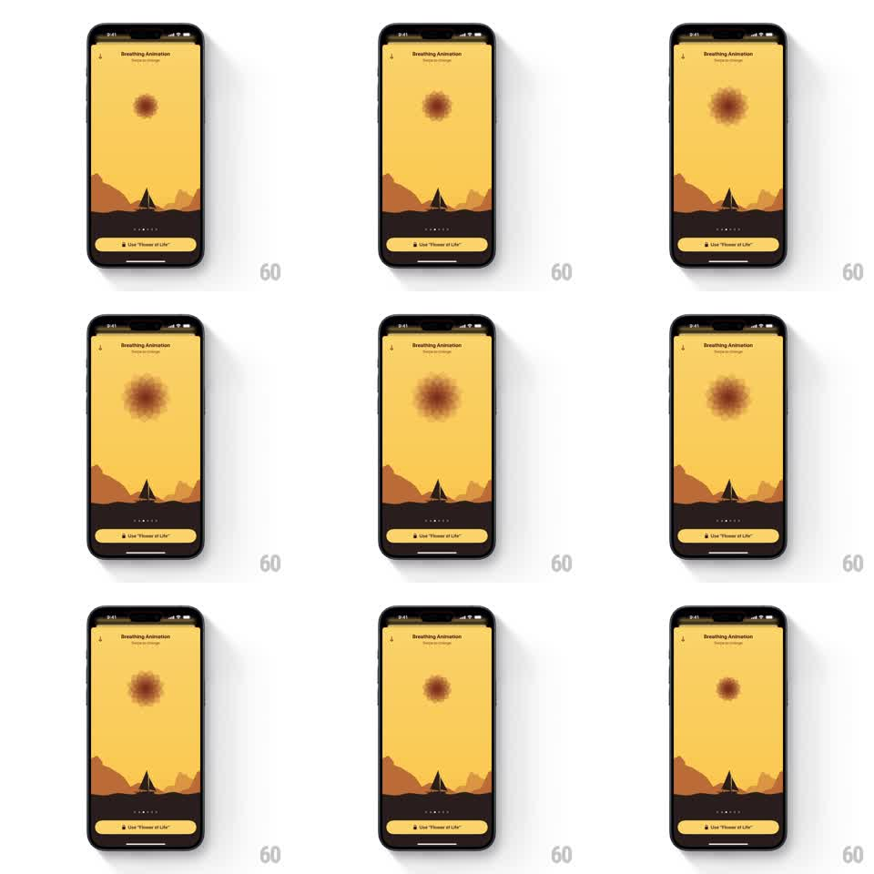

Media
Frame-by-frame

Rebuild this animation 1:1: Unwind's flower-of-life breathing guide - over the desert scene, a soft geometric flower of overlapping petals expands, contracts, and slowly rotates to pace breathing.

Rebuild this animation 1:1: Unwind's flower-of-life breathing guide - over the desert scene, a soft geometric flower of overlapping petals expands, contracts, and slowly rotates to pace breathing. ## Integration Integration: stack-agnostic spec - springs given as stiffness/damping, timed motions as duration + curve; map every value to your framework and animation library of choice. ## Scene Unwind's "Breathing Animation" screen: the warm yellow sky, dark dunes, and tent silhouette, page dots and a "Use 'Flower of Life'" button at the bottom. In the sky floats a flower-of-life form - overlapping circular petals in soft terracotta with blurred, glowing edges. It blooms larger, shrinks back, and rotates gently through the cycle. ## Motion spec Pattern: flower-of-life breathing loop, ~8s per breath. - Inhale (~4s): the flower expands (scale 0.6 to 1.3, ease-in-out), petals blurring softer as they grow, the whole form rotating about 15 degrees. - Hold (~1s): a gentle luminosity pulse at full size. - Exhale (~4s): the flower contracts and sharpens slightly, rotating back - the rotation is continuous and slow, not snapping. - Petals overlap with additive blending so the center reads brightest at full bloom. - The desert scene and chrome stay perfectly still. ## Calibration - Edges are soft - a meditative glow, not vector-sharp petals. - Rotation is a slow drift (~4 degrees per second max), always subordinate to the scale rhythm. ## Reduced motion The flower crossfades between small and large without rotation. ## Don't miss - Overlapping petals brighten where they cross - the additive center is the focal point. - The form sits in the sky like a sun above the horizon line.